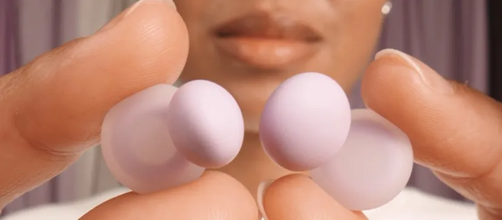
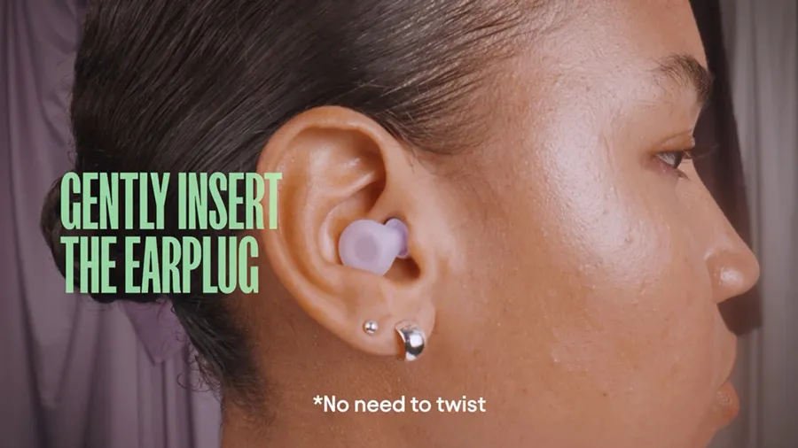
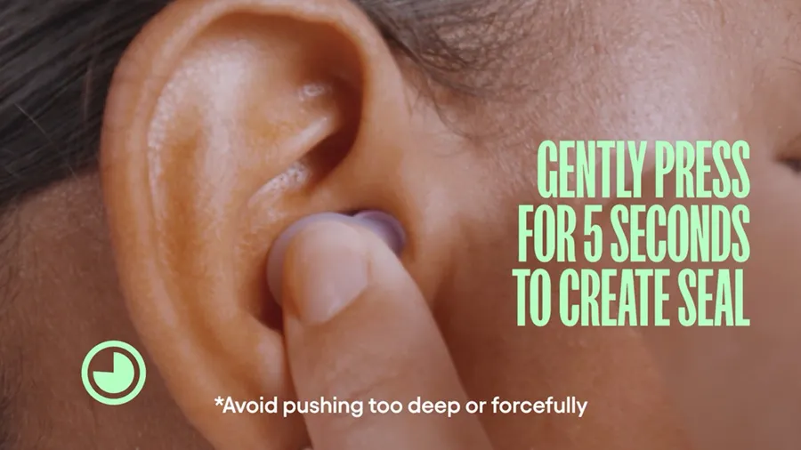
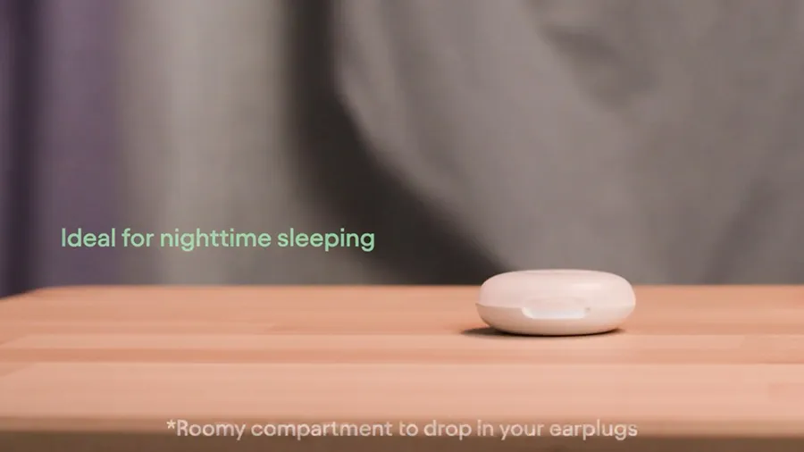
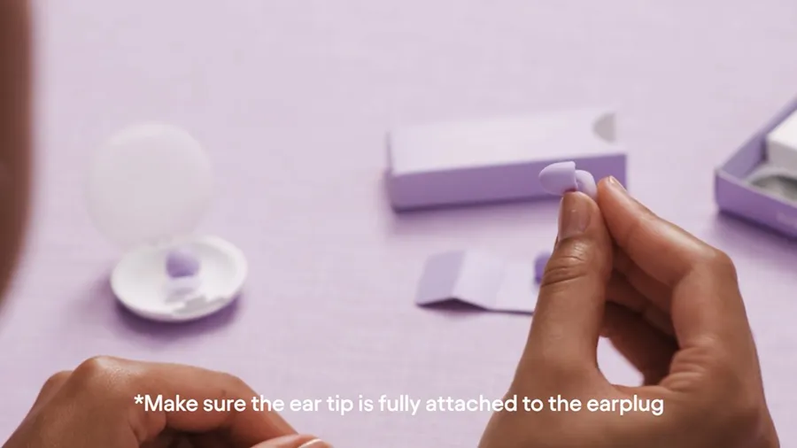
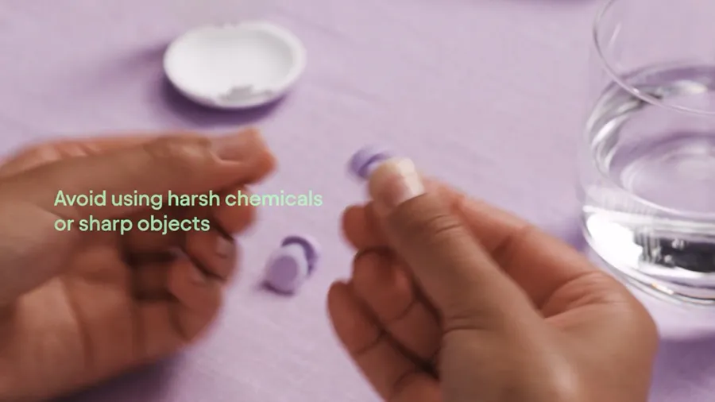
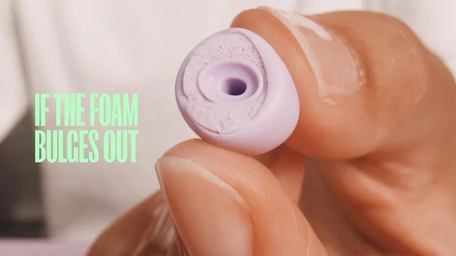

Somnus fit guide
Your perfect fit
Find your tip size in 3 questions, then wear them in 4 steps.
How to wear
-

Pick your tip
Size M comes fitted. Use it, or swap to the size the tip-size finder suggests. Each ear can take a different size.
-

Open and insert
Pull the back of your ear to open the canal, then slide the tip in. Unlike foam plugs, no need to roll or twist.
-

Press and check the seal
Press gently for 5 seconds. Move your jaw side to side: if it stays put and your voice sounds louder, you are sealed. Sticking out? Go down a size.
-

Take them out
Grip the loop, twist gently to break the seal, then ease it out slowly. Never yank: that can pull the tip off.
Tip-size finder
Answer three quick questions for a starting size. All 4 sizes (XS, S, M, L) come in the box in both tip types in case you change your mind.
Give it 3 nights
Something new in your ear feels odd at first. Ease in before you decide.
-
Night 1
Wear them for 20 minutes while you read in bed, and check that you can hear your phone alarm, then sleep in them.
-
Night 2
Sore on one side? Drop that ear one size. Leaky? Go one size up or change the angle.
-
Night 3
Still not right? Swap tip type, then ask us. Shopee Mall's free 15-day returns cover you while you try.
Care & cleaning
Reusable earplugs only require a quick clean, not a new pair every night.
-

Take the tips off
Gently remove the ear tips from the earplug body before you clean them.
-

Wipe, don't soak
Wipe the body and tips with a damp cloth. Never submerge the tips, and avoid harsh chemicals and sharp objects.
-

Dry fully
Let everything air-dry completely before you reattach the tips. This matters more in humid weather.
-
Store in the case
Keep them in the case by your bed or in your bag when you travel, and don't share earplugs, even with your partner.
Replacing tips: swap them after about 100 nights, or sooner if the foam stops springing back, the silicone tears or the seal is gone. Get new tips.
Got your pair yet?
S$64.95, with all 4 tip sizes in both tip types included in the box.
See Somnus Sleep Earplugs